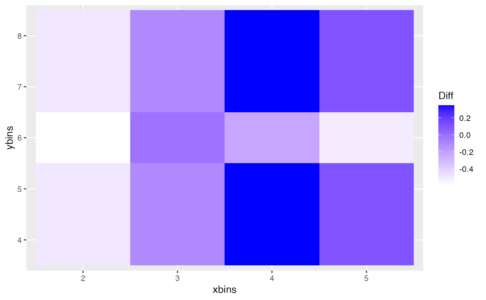

R/opt_diff.r
opt_bin_diff.RdThis function finds the optimal number of bins in both x and y direction which should
be used to calculate the binned distance. The binned distance is calculated for each
combination of provided choices of number of bins in x and y direction and finds the
difference using calc_diff for each combination. The combination for which the
difference is maximum should be used.
opt_bin_diff(
lineup.dat,
var,
xlow,
xhigh,
ylow,
yhigh,
pos,
plot = FALSE,
m = 20
)lineup data to get the lineup
a list of names of the variables to be used to calculate the difference
the lowest value of number of bins on the x-direction
the highest value of number of bins on the x-direction
the lowest value of number of bins on the y-direction
the highest value of number of bins on the y-direction
position of the true plot in the lineup
LOGICAL; if true, returns a tile plot for the combinations of number of bins with the differences as weights
number of plots in the lineup, by default m = 20
a dataframe with the number of bins and differences the maximum mean distance of the null plots
if(require('dplyr')){
opt_bin_diff(lineup(null_permute('mpg'), mtcars, pos = 1), var = c('mpg', 'wt'),
2, 5, 4, 8, pos = 1, plot = TRUE, m = 8)
}
#> $dat
#> # A tibble: 20 × 3
#> # Groups: xbins [4]
#> xbins ybins Diff
#> <int> <int> <dbl>
#> 1 2 4 -0.570
#> 2 2 5 -0.570
#> 3 2 6 -1.13
#> 4 2 7 -0.570
#> 5 2 8 -0.570
#> 6 3 4 -0.0940
#> 7 3 5 -0.0940
#> 8 3 6 -0.506
#> 9 3 7 -0.0940
#> 10 3 8 -0.0940
#> 11 4 4 0.0866
#> 12 4 5 0.0866
#> 13 4 6 -0.382
#> 14 4 7 0.0866
#> 15 4 8 0.0866
#> 16 5 4 0.513
#> 17 5 5 0.513
#> 18 5 6 -0.0125
#> 19 5 7 0.513
#> 20 5 8 0.513
#>
#> $p

#>